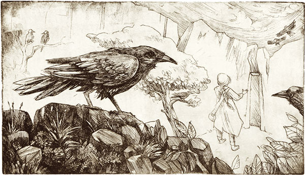

|
There was once a man who had seven sons, and still he had no daughter, however much he wished for one. At length his wife again gave him hope of a child, and when it came into the world it was a girl. The joy was great, but the child was sickly and small, and had to be privately baptized on account of its weakness. The father sent one of the boys in haste to the spring to fetch water for the baptism. The other six went with him, and as each of them wanted to be first to fill it, the jug fell into the well. There they stood and did not know what to do, and none of them dared to go home. As they still did not return, the father grew impatient, and said, "They have certainly forgotten it for some game, the wicked boys!" He became afraid that the girl would have to die without being baptized, and in his anger cried, "I wish the boys were all turned into ravens." Hardly was the word spoken before he heard a whirring of wings over his head in the air, looked up and saw seven coal-black ravens flying away. The parents could not recall the curse, and however sad they were at the loss of their seven sons, they still to some extent comforted themselves with their dear little daughter, who soon grew strong and every day became more beautiful. For a long time she did not know that she had had brothers, for her parents were careful not to mention them before her, but one day she accidentally heard some people saying of herself, "that the girl was certainly beautiful, but that in reality she was to blame for the misfortune which had befallen her seven brothers." Then she was much troubled, and went to her father and mother and asked if it was true that she had had brothers, and what had become of them? The parents now dared keep the secret no longer, but said that what had befallen her brothers was the will of Heaven, and that her birth had only been the innocent cause. But the maiden took it to heart daily, and thought she must deliver her brothers. She had no rest or peace until she set out secretly, and went forth into the wide world to trace out her brothers and set them free, let it cost what it might. She took nothing with her but a little ring belonging to her parents as a keepsake, a loaf of bread against hunger, a little pitcher of water against thirst, and a little chair as a provision against weariness. And now she went continually onwards, far, far to the very end of the world. Then she came to the sun, but it was too hot and terrible, and devoured little children. Hastily she ran away, and ran to the moon, but it was far too cold, and also awful and malicious, and when it saw the child, it said, "I smell, I smell the flesh of men." On this she ran swiftly away, and came to the stars, which were kind and good to her, and each of them sat on its own particular little chair. But the morning star arose, and gave her the drumstick of a chicken, and said, "If you thou hast not that drumstick thou canst not open the Glass mountain, and in the Glass mountain are thy brothers." The maiden took the drumstick, wrapped it carefully in a cloth, and went onwards again until she came to the Glass mountain. The door was shut, and she thought she would take out the drumstick; but when she undid the cloth, it was empty, and she had lost the good star's present. What was she now to do? She wished to rescue her brothers, and had no key to the Glass mountain. The good sister took a knife, cut off one of her little fingers, put it in the door, and succeeded in opening it. When she had gone inside, a little dwarf came to meet her, who said, "My child, what are you looking for?" "I am looking for my brothers, the seven ravens," she replied. The dwarf said, "The lord ravens are not at home, but if you will wait here until they come, step in." Thereupon the little dwarf carried the ravens' dinner in, on seven little plates, and in seven little glasses, and the little sister ate a morsel from each plate, and from each little glass she took a sip, but in the last little glass she dropped the ring which she had brought away with her. Suddenly she heard a whirring of wings and a rushing through the air, and then the little dwarf said, "Now the lord ravens are flying home." Then they came, and wanted to eat and drink, and looked for their little plates and glasses. Then said one after the other, "Who has eaten something from my plate? Who has drunk out of my little glass? It was a human mouth." And when the seventh came to the bottom of the glass, the ring rolled against his mouth. Then he looked at it, and saw that it was a ring belonging to his father and mother, and said, "God grant that our sister may be here, and then we shall be free." When the maiden, who was standing behind the door watching, heard that wish, she came forth, and on this all the ravens were restored to their human form again. And they embraced and kissed each other, and went joyfully home. |
TL;DR:http://one-elevenbooks.com/the-seven-ravens/ Once upon a time there was a man who had seven sons. He and the wife wished for a daughter. After a while, the woman finally became pregnant again and the child was born a girl. The family was excited, but the girl was weak and they wanted to baptize her right away. The seven brothers were sent to the well to fetch water for a baptism. They all wanted to be the first to draw water. They jostled each other around and lost the pitcher in the well. The man and his wife had been waiting. He thought that surely the seven brothers were fooling around. He said that he wished they were ravens. Immediately all seven brothers turned into ravens and flew to the house. The parents were sad, but knew there was nothing they could do. They raised their daughter with no idea that she had had brothers. When the girl was a little older. She heard a rumor that she had once had brothers. She asked her parents who finally told her the truth. They told her it wasn’t her fault, but the girl still felt that it was her fault. She went away and took little provisions. She traveled to the sun where it was too hot. She traveled to the moon, which said things to her. She traveled to the stars who were nice to her. They gave her a chicken drumstick and told her she needed it to get into the glass mountain. The girl traveled to the glass mountain, but when she went to get the drumstick, she found it was gone. She pricked her finger and used it to get into the glass mountain. Once inside she asked where the ravens were. Someone told her they would be home soon. They were due for dinner. Seven plates and cups had been set out for the ravens. The girl ate and drank from each one. She put her ring in the last cup. When the ravens came home, they noticed someone had been eating their food and drinking their drink. They noticed the ring and thought that surely their sister must be there. She was and they were turned back into humans.  |